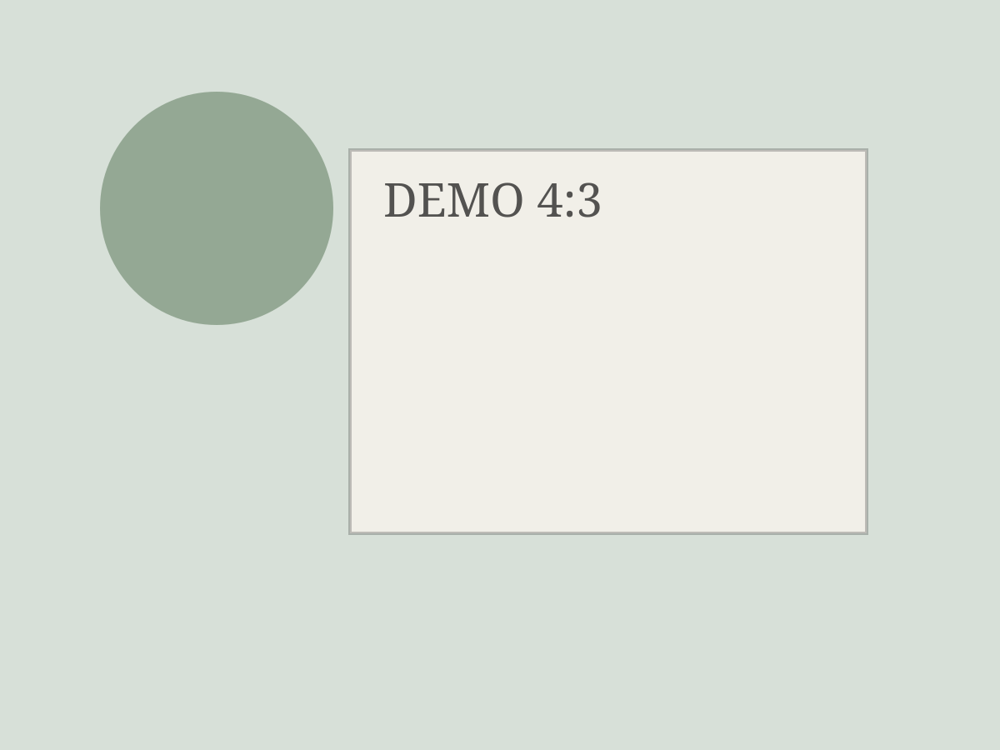
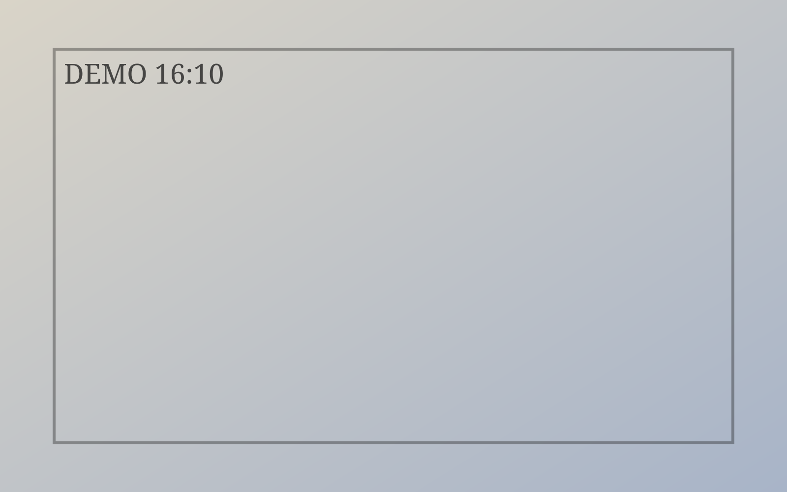

Act ICover
01 / 24
Skill Demo
airay-html-ppt-skill · Capability Deck
杂志风 Web PPT 的能力全景
这一份 Demo 既展示最终成品质感，也直接教你如何把这个 skill 用起来并稳定交付。
Capability: Visual QualityCapability: WorkflowCapability: Delivery
Magazine Web PPTAct I
Act ILearn Map
02 / 24
你将从 Demo 学到什么
看效果
理解这个 skill 能做出的页面质感、版式节奏与信息密度。
OUTPUT
会使用
掌握 0-5 启动输入、HTTP 预览、导出与验收路径。
USAGE
懂边界
明确适合场景与不适合场景，避免错用模板。
BOUNDARY
Capability: Learning-Oriented DemoOverview
Act I1-Minute View
03 / 24
一分钟总览
从输入到交付的完整链路
你给出主题、受众、时长、目的、页数要求；skill 生成结构化页面；通过本地 HTTP 预览确认视觉；最后导出稳定 PDF 并按 checklist 验收。
整套过程强调“可讲、可学、可复用、可交付”。
“Demo 不是样子货，而是一份可直接参考的方法资产。”Demo Positioning
InputComposePreviewExport
Capability: End-to-End Narrative1-Minute
Act IStartup 0-5
04 / 24
首次输入模板
0-5 启动项，决定首版质量
0
Demo
先看示例再开工
1
主题
越具体越好
2
受众
人数+角色关键词
3
时长
决定节奏和深度
4
目的
分享/汇报/评审/培训
5
页数
总页数约束
Capability: Input Interface0-5
Act IInput Sample
05 / 24
高质量输入示例
1 主题
AI 时代的产品叙事重构：从功能堆叠到认知设计的长期主义
TOPIC
2 受众
80人、产品经理、设计师、研发负责人、AI初学者、业务管理层
AUDIENCE
3 时长
40 分钟
TIME
4 目的
内部分享 + 方法论培训
GOAL
5 页数
24 页
PAGES
Capability: Prompt QualitySample Input
Act IIStructure
06 / 24
Page Architecture
页面结构能力总览
一套组件体系，支持章节幕封、数据页、对比页、图文混排、网格证据和结尾 CTA。
HeroStatsCompareMixedGrid
Capability: Layout LibraryAct II
Act IIChapter Page
07 / 24
章节幕封怎么用
Recommended Pattern
01
Kicker
标明章节定位
02
Hero 标题
一句话抓住注意力
03
Lead
1-2 句解释目标
04
Meta
能力标签辅助理解
05
Foot
保持页内叙事连贯
Capability: Chapter TransitionHero Usage
Act IIData Page
08 / 24
数据页写法：先结论后数字
Stat Composition
01
结论句
先说变化方向
02
核心指标
2-3 个即可
03
对比基线
同比/环比/前后
04
补充口径
避免误读
05
视觉节奏
数字大，注释小
06
可导出性
打印可读优先
Capability: Data NarrativePipeline
Act IICompare Page
09 / 24
对比页：旧版 vs 新版
旧版
信息堆叠、层级混乱、讲述路径跳跃。
BEFORE
新版
结构稳定、节奏明确、结论可快速抓取。
AFTER
价值
听众理解成本下降，讲者控场能力提升。
VALUE
比较不是为了“批评旧稿”，而是帮助听众看见改进幅度。Compare Principle
Capability: Compare LayoutCapability: Narrative Delta
Capability: Before/AfterCompare
Act IIMixed Page
10 / 24
图文混排能力
左叙事 + 右主图的稳定组合
混排页适合讲“一个核心观点 + 一个关键视觉证据”。左侧负责逻辑，右侧负责记忆点，避免两边都抢注意力。
一页只讲一件事，画面和语言共同服务这件事。Mixed Rule

Capability: Image + Text CompositionMixed
Act IIStructure Recap
11 / 24
Do
建议做法
用章节页切分段落，用数据页承载结论，用混排页承载证据，用对比页说明变化。
章节数据对比混排
Avoid
避免做法
整份稿件全是同一种版式；每页塞太多论点；把关键信息挤在角落小字。
单调拥挤失焦
Capability: Structure HeuristicsRecap
Act IIIImages
12 / 24
Image Workflow
配图能力与比例规范
这个 skill 的图片不是“装饰”，而是页面结构的一部分，需要按比例、落位、裁切策略来组织。
Capability: Image SystemAct III
Act IIIImage Types
13 / 24
推荐图片类型
01
场景图
用于建立语境和情绪，适合章节过渡。
02
证据图
用于支撑结论，适合网格证据页和案例页。
03
结构图
用于讲流程与关系，适合方法论说明。
每种图都要对应叙事职责，避免“好看但无信息”。Image Intent
Capability: Image TaxonomyType
Act IIIRatio Rules
14 / 24
比例与裁切规则
16:9
主视觉或横向叙事图，适合宽屏信息铺陈。
HERO
4:3
图文混排常用比例，兼顾信息量与稳定性。
MIXED
3:2 / 1:1
证据网格和补充素材，便于模块化拼接。
GRID
裁切原则
顶部信息优先保留，避免把标题、页码画进图片。
CROP
Capability: Ratio DisciplineRules
Act IIIGrid Evidence
15 / 24
多图页组织示例





Capability: Grid EvidenceCapability: Multi-image Rhythm
Capability: Evidence GridGallery
Act IVInteraction
16 / 24
Interaction System
交互能力：看得见，也用得顺
预览并不只看静态页面：索引、切图、翻页和导出都需要在真实浏览体验中验证。
Capability: Interaction UXAct IV
Act IVESC Overview
17 / 24
ESC 索引能力
按 `ESC` 打开全局缩略图索引，快速跳到任意页；再按 `ESC` 关闭返回当前浏览节奏。
适用场景
彩排跳页、现场问答、局部回看。
USE
设计目标
信息可读优先，缩略图显示为最终可读态。
GOAL
Capability: Slide IndexESC
Act IVImage Preview
18 / 24
Fullscreen
点击图片全屏看图
任意 `` 可点击全屏预览，适合细看证据图、界面图和复杂视觉素材。
Esc 关闭遮罩关闭
In-slide Loop
当前页内循环切图
左右键与左右点击仅在当前 slide 的图片集合内循环，不跨页，避免干扰演讲主流程。
ArrowLeft/RightNo Cross-slide
Capability: Fullscreen Image ViewerPreview
Act VDelivery
19 / 24
Export Workflow
导出能力与交付稳定性
能展示只是第一步，可稳定导出、可验收交付，才是这个 skill 的核心实用价值。
Capability: Delivery PipelineAct V
Act VHTTP Preview
20 / 24
预览强制要求：必须走 HTTP
`file://` 方式会导致部分资源加载与导出行为不稳定，不作为验收依据。Rule
标准方式
`python3 -m http.server 4173` 启动本地服务
HTTP
无论是“查看 demo”还是“预览成稿”，都必须先起本地 server。Mandatory
Capability: Preview StandardCapability: Runtime Consistency
Capability: Local HTTP PreviewMandatory
Act VPDF Export
21 / 24
导出规则与文件命名
导出入口
右下角 `导出 PDF` 按钮，一键生成完整文档。
EXPORT
文件名
默认取第一页标题文字（例如：`杂志风 Web PPT.pdf`）。
NAME
翻页输入
仅响应空格和左右键，不响应滚轮，避免误翻页。
INPUT
导出目标
每页排版稳定、中文可读、图片不失真。
QUALITY
Capability: PDF ExportStable Naming
Act VIAcceptance
22 / 24
验收 Checklist（交付前）
P0
Read
标题/正文可读，语义连贯
P0
Flow
1→N 页叙事可讲通
P0
Export
PDF 成功且页码完整
P1
Image
裁切合理、比例一致
P1
Motion
动效不影响阅读
P1
Index
ESC 索引显示完整
Capability: QA ChecklistAcceptance
Act VIBoundary
23 / 24
Can Do
擅长场景
叙事型产品汇报、方案说明、案例展示、流程讲解、可导出的单文件 Web PPT。
NarrativeLayoutDelivery
Cannot Do Well
不适合场景
复杂财务建模、超大表格教学、多人实时协作编辑、重交互原型演示。
Heavy ModelingRealtime Co-editComplex Prototype
Capability: Scope BoundaryDo / Don't
FinaleCTA
24 / 24
Start Building
现在就开始你的第一版
直接给出 0-5 输入项，先做出可讲、可学、可导出的版本，再按这份 Demo 的能力地图迭代升级。
Input
0-5
一次给齐信息
Build
24P
完整叙事成稿
Deliver
PDF
稳定验收交付
Capability: LaunchCapability: IterateCapability: Ship
Airay HTML PPT SkillShip Your Deck